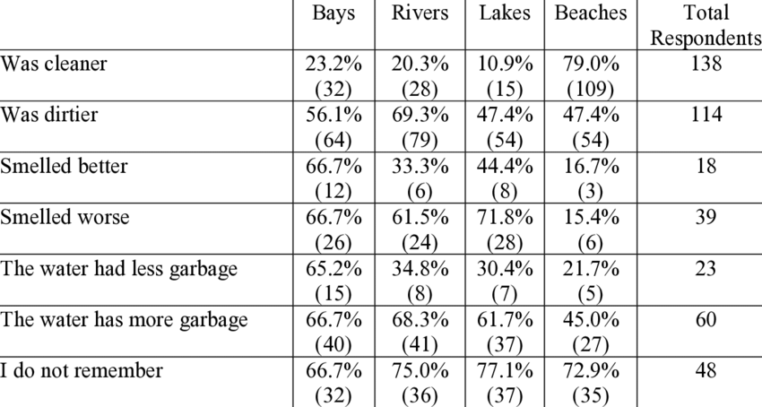
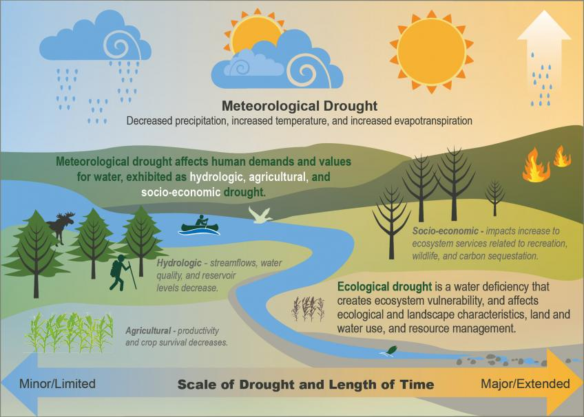

Water Crisis in Cuba
By Henri Brizuela Ocana
Cuba's Critical Water Crisis: Aging infrastructure, Pervasive Contamination, and intensifying Droughts Create Daily Scarcity, Health Hazards, and Agricultural Vulnerability.
Cuba's Critical Water Crisis: Aging infrastructure, Pervasive Contamination, and intensifying Droughts Create Daily Scarcity, Health Hazards, and Agricultural Vulnerability.
Parties affected, Pollutants, Environmental Spheres

Cuban citizens lining up for drinking water. Image: Ramon Espinosa / AP — Source: EL PAIS
Utility poles affected by Hurricane Ian (Pinar del Rio). Image: Ramon Espinosa / AP — Source: Aljazeera
Overview of crisis, pollutants and impacts
Synopsis of crisis; Cuba experiencing severe water crisis leading to scarcity and contamination. Development of issue dating back to around 1959.
Impact on Hydrosphere:
Perceived causes of contamination. Image: Pumar, Enrique & Solo-Gabriele, Helena & Treaster, Joseph. (2020). Water and Quality of Life in Contemporary Cuba. Contending Issues and Implications. Cuban Studies. forthcoming. 10.1353/cub.2023.a899809. Source: ResearchGate
Impacted areas, evidence of impact, future aspect
Entire island of Cuba impacted:
Water bodies:
Future aspect:
Quantitative Data:
Comparison of pollution levels since respondents last visited. Image: Pumar, Enrique & Solo-Gabriele, Helena & Treaster, Joseph. (2020). Water and Quality of Life in Contemporary Cuba. Contending Issues and Implications. Cuban Studies. forthcoming. 10.1353/cub.2023.a899809. Source: ResearchGate
Timeline of issue and ongoing development
Installation of new hydraulic networks in capital of Cuba. Image: Jorge Luis Baños / IPS Source: Global Issues
Root causes, broader forces
The broader forces that contribute also include political and economic factors, along with tourism strains.
Diagram of a Meteorological drought. Image: US Forest Service — Source: U.S. DEPARTMENT OF AGRICULTURE - Forest Service
How did it unfold? Talk about the sequence of events, process, or mechanisms.
Model of saltwater intrusion. Image: Cantelon, Julia & Guimond, Julia & Robinson, Clare & Michael, Holly & Kurylyk, Barret. (2022). Vertical Saltwater Intrusion in Coastal Aquifers Driven by Episodic Flooding: A Review. Water Resources Research. 58. 10.1029/2022WR032614. Source: ResearchGate
Types of pollutants and their risk
Symptoms of Dengue fever. Image: Cleveland Clinic Source: Cleveland Clinic
The small island of Cuba has been dealing with a concerning water crisis dating back to before 1959. With its deteriorating infrastructure, Cuba has been facing issues ranging from drinking water contamination, sewage pipe corrosion, as well as drought intensity. Extreme droughts were reported affecting croplands and water availability. In 2008 Cuba became prey to four hurricanes in succession (Fay, Gustav, Ike, Paloma) and damaged 647,111 houses, with 13% of them being completed destroyed. There is also the increase of saline intrusion into the country's groundwater, which puts agriculture at high risk of contamination. Independent studies consistently reveal that the perceived quality of drinking water among Cuban residents and tourists is poor. The main anthropogenic cause is the infrastructure, as when water arrives through municipal systems, it is often under low pressure, allowing bacteria and other foreign material to enter distribution. As reported by the National Institute of Hydraulic Resources (INRH), in early 2025, only 61.2% of the population had access to "risk-free" drinking water services, defined as being available when needed, and free from faecal and chemical contamination. According to several sources, Hepatitis A, typhoid, polio, and cholera are among the diseases that spread through drinking water. Cuba has faced cholera outbreaks in the past, with significant cases reported in 2012 and 2015. The Ministry of Science, Technology, and the Environment (CITMA) announced a national plan in 2018 called "Tarea Vida", which included upgrading water infrastructure and maintenance to slow down the effects of climate change impact. The INRH reported installing 241 kilometers of new water supply networks, along with 32 water treatment plants in 2024. While tourism will offer economic gains, an increase in tourism is likely to increase water pollution, further straining the drinking water system.